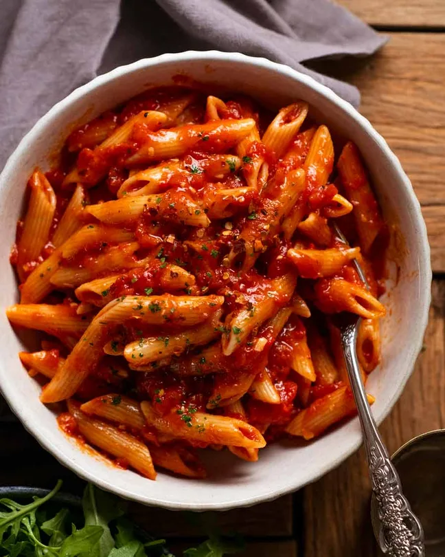

Home
Penne Arrabbiata

This spicy Italian Penne Arrabbiata is homemade in 20 minutes! it makes a great vegetarian dish, served with fresh parmesan, basil, and parsley.
Ingredients
- 1 pound penne rigate
- 2 tablespoons olive oil
- 3 cloves garlic
- 1/4 teaspoon crushed red pepper flakes (or to taste depending how spicy you like it)
- 1 can whole peeled tomatoes
- 2 tablespoons tomato paste
- 6 fresh basil leaves
- 1/2 cup freshly grated parmesan cheese
- 1/3 cup fresh chopped parsley
Method
- Cook pasta in a large pot of boiling water, according to package instructions
- Meanwhile, heat olive oil in a large skillet over medium heat. Add garlic and crushed red pepper; cook, stirring for 30 seconds
- Add tomatoes, crushing them roughly with the back of a wooden spoon, and tomato paste
- Bring to a simmer over low heat and cook for 5-10 minutes. Remove from heat and add fresh chopped basil
- When pasta is cooked, drain the water and add it to the sauce. Toss well. Taste and add more seasoning if needed
- Serve immediately, topped with a generous portion of the grated cheese and fresh chopped parsley
White Sauce
Lemon Garlic Pasta
Lasagne